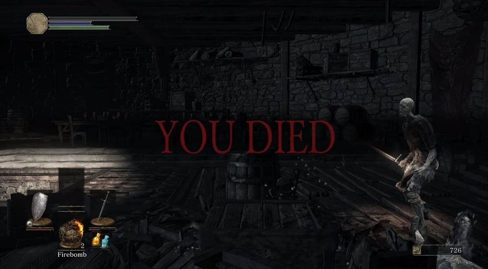
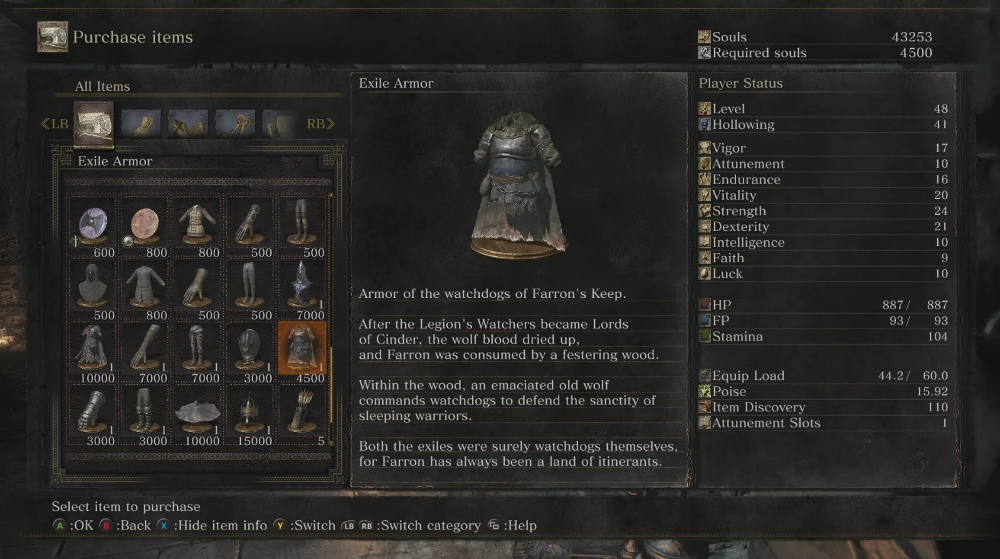

Un gameplay exigeant mais gratifiant

Dark Souls III est un jeu qui exige une vraie discipline. Chaque attaque, chaque esquive ou chaque blocage consomme de l’endurance, et la moindre erreur peut coûter cher. Cette rigueur peut sembler impitoyable, mais c’est précisément ce qui rend chaque victoire mémorable : on a le sentiment de l’avoir gagnée à la force de sa concentration et de son apprentissage.
Ce qui me marque le plus, c’est ce mélange constant de tension et de satisfaction. On avance toujours avec la crainte d’un faux pas, mais réussir à anticiper les mouvements d’un adversaire et placer l’action juste au bon moment procure une vraie fierté. C’est cette exigence, parfois frustrante mais toujours gratifiante, qui me pousse à revenir encore et encore dans cet univers.
Armes et Magies

Le jeu propose une grande variété d’armes de mêlée : épées droites, grandes épées, hallebardes, katanas… Chacune possède son propre style et ses animations uniques. Trouver l’arme qui correspond à votre manière de jouer est une expérience en soi.
Les miracles et les pyromancies enrichissent encore plus le gameplay. Les miracles apportent soutien et puissance divine, qu’il s’agisse de soins ou de foudres destructrices. Les pyromancies, elles, incarnent la force brute du feu, transformant les combats en véritables démonstrations de puissance. Ces choix permettent de créer des personnages très différents et de renouveler l’expérience à chaque partie.
Un storytelling unique

L’une des signatures de la série, c’est sa façon unique de raconter son histoire. Pas de longues cinématiques explicatives : le lore se dévoile à travers des quêtes parfois obscures, des dialogues énigmatiques et surtout les descriptions d’objets. Chaque détail compte, et c’est au joueur de relier les morceaux pour comprendre l’univers.
Cette approche rend l’exploration passionnante. On ne se contente pas de suivre un scénario imposé, on enquête, on interprète, et on construit sa propre vision du monde de Lothric. C’est une narration exigeante, mais elle récompense la curiosité et l’attention, offrant une immersion profonde et durable.